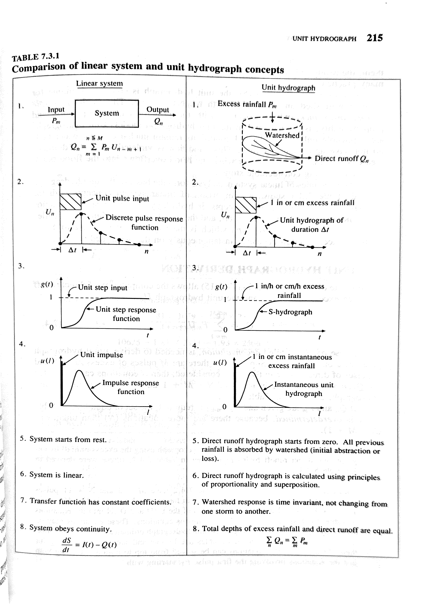

Chapter 4 Process-Based Modeling - Probabilistic and Process Simulation
* Modules 4.1 and 4.2 are adapted from Fabian Nipggen (REWM.4500.500)
4.1 Transfer function rainfall-runoff models
4.1.1 Learning Module 4
4.1.1.1 Summary
In previous modules, we focused on where water goes in a watershed and whether it runs off quickly as stormflow or moves slowly through storage and contributes to baseflow. In this module, we shift focus to when water arrives at the stream.
Why does timing matter?
Water that moves quickly tends to look chemically different than water that moves slowly
Longer travel times allow for more uptake by vegetation or interaction with soils, minerals, and microbes
The timing of runoff shapes the hydrograph and affects solute transport
In this module, we will model the temporal aspects of runoff response to input using a transfer function. A transfer function is a tool that describes how rainfall input is translated into runoff output over time.
4.1.1.1.1 Overall Learning Objectives
By the end of this module, you should be able to:
Explain what a transfer function is in plain language
Describe how water transit time influences runoff timing and composition
Recognize different ways transit time can be represented in hydrological models
Interpret (not derive) the basic equations used in transfer-function rainfall–runoff models
4.1.1.1.2 Key Terms
In modeling a flow system, note that consideration of time may vary depending on the questions being asked. Transit time is the average time required for water to travel through the entire flow system, from input (e.g., rainfall on soil surface) to output (e.g., discharge). Residence time is a portion of transit time, describing the amount of time water spends within a specific component of the flow system, like storage (e.g., in soil, groundwater, a puddle or a lake).
First, familiarize yourself with the transfer function we will code (TRANSEP) by reading this paper. If the terminology feels dense, you may use AI tools to help extract the key concepts and focus on the big-picture ideas:
TRANSEP - a combined tracer and runoff transfer function hydrograph separation model
Then this text will step through key concepts in the paper to facilitate hands-on exploration of the rainfall-runoff portion of the TRANSEP model in the assessment.

A transfer function (TF) is a mathematical representation of how a system responds to input signals. In a hydrological context, it describes the transformation of inputs (e.g. precipitation) to outputs (e.g. runoff). In other words, it is a mathematical way of answering the question: If water enters the watershed at time t, how much of it shows up at the stream later and when?
4.1.1.1.3 The Linear Time-Invariant TF
We start with a linear, time-invariant (LTI) system. The name sounds extravagant, but the assumptions are simple:
Linear: Double the rainfall → double the runoff response
Time-invariant: The watershed responds the same way today as it did yesterday
Additive: Responses from multiple rainfall pulses add together
Under these assumptions, we can represent the watershed as a linear reservoir. Linear reservoirs are simple models designed to simulate the storage and discharge of water in a catchment. These models assume that the catchment can be represented as single storage compartments and that
- Water is stored temporarily
- the rate of outflow is porportional to how much water is stored
- there is no threshold behavior or hysteresis. external link
Recall this isn’t how all watersheds work, these are useful approximations.

4.1.1.1.4 The Instantaneous Unit Hydrograph:
The Instantaneous Unit Hydrograph (IUH) is the transfer function used in the TRANSEP model. It is an approach to hydrograph separation that is useful for analyzing the temporal distribution of runoff in response to a ‘unit’ pulse of rainfall (e.g. uniform one-mm depth over a unit area represented by a unit hydrograph). In other words, it answers the question: If one unit of effective rainfall fell instantly over the watershed, how would that water be released to the stream over time?
Therefore, the following assumptions are made when the IUH is used as a transfer function:
- the watershed response reflects the ensemble of watershed characteristics
- the response shape does not change through time
- the output response is linearly proportional to the input (i.e. runoff of scales linearly with rainfall)
The IUH is not a specific storm, rather it is a response kernel that we reuse for all storms.

4.1.1.2 From Concept to Math
Don’t worry about deriving or memorizing the following equations; they are included only to help you understand the relationships among variables and reinforce the underlying concepts.
4.1.1.2.1 IUH
In TRANSEP, the IUH is written as a function \(g(\tau)\). This function describes how runoff is distributed through time after rainfall occurs.
\[
g(\tau) = \frac{\tau^{\alpha-1}}{\mathrm{B}^{\alpha}\Gamma(\alpha)}exp(-\frac{\tau}{\alpha})
\]
What matters here is that:
The shape of \(g(\tau)\) controls how fast or slow water moves
Parameters change whether runoff is flashy or delayed
The function integrates to 1 (mass is conserved)
4.1.1.2.2 Convolution: Turning Rainfall into Runoff
Runoff is calculated by combining rainfall with the transfer function:
\[
Q(t)= \int_{0}^{t} g(\tau)p_{\text{eff}}(t-\tau)d\tau
\]
Runoff at time t is the sum of past rainfall inputs, each delayed and weighted by the transfer function.
OK, I realize your eyes probably glazed over somewhere around ‘convolution’… don’t worry about the details of the equations. Check out this video to have convolution described using dollars and cookies, then imagine each dollar as a rainfall unit and each cookie as a runoff unit. Review the equations again after the video.
4.1.1.2.3 The Loss Function:
Not all rainfall contributes to runoff. Some is lost to infiltration, evaporation, or temporary storage.
The loss function represents the linear rainfall-runoff model used in the TRANSEP model. In other words, it converts total preciptiation \(p(t)\) into effective precipitation \(p_{\text{eff}}(t)\).
\[
s(t) = b_{1} p(t + 1 - b_{2}^{-1}) s(t - \triangle t)
\]
\[
s(t = 0) = b_{3}
\]
\[
p_{\text{eff}}(t) = p(t) s(t)
\]
where \(p_{\text{eff}}(t)\) is the effective precipitation.
\(s(t)\) is the antecedent precipitation index which is determined by giving more importance to recent precipitation and gradually reducing that importance as we go back in time (i.e. recent rainfall matters more than old rainfall).
The rate at which this importance decreases is controlled by the parameter \(b_{2}\).
The parameter \(b_{3}\) sets the initial antecedent precipitation index at the beginning of the simulated time series.
Again: the goal is behavior, not physical realism.
Transfer-function models are powerful because they:
Explicitly represent timing, not just volume
Allow separation of rainfall input and watershed response
Provide a bridge between hydrology and tracer studies
They are also limited:
They assume linearity
They hide spatial heterogeneity
They trade physical detail for interpretability
Understanding these tradeoffs is more important than memorizing equations.
4.1.1.2.4 How do we code this?
We will use a skeletal version of TRANSEP, focusing only on the rainfall-runoff piece which includes the loss-function and the gamma transfer function.
We will use rainfall and runoff data from the Tenderfoot Creek Experimental Forest to model annual streamflow at a daily time step. Then we can use this model as a jump-off point to start talking about model calibration and validation in future modules.
4.1.1.2.5 Final thoughts:
If during your modeling experience, you find yourself wading through a bog of complex physics and multiple layers of transfer functions to account for every drop of input into a system, it is time to revisit your objectives. Remember that a model is always ‘wrong’, but it can help us understand complex systems, make predictions, and gain insights even if they are not an exact replica of the real world. Check out this paper for more:
https://agupubs.onlinelibrary.wiley.com/doi/10.1029/93WR00877
4.2 Monte Carlo Simulation
4.2.1 Learning Module 5
4.2.1.1 Background:
Monte Carlo Simulation is a method to estimate the probability of the outcomes of an uncertain event. It is based on a law of probability theory that says if we repeat an experiment many times, the average of the results will get closer to the true probability of those outcomes.
First check out this video:
4.2.1.2 Reading
Then read this: https://www.ncbi.nlm.nih.gov/pmc/articles/PMC2924739/ for a understanding of the fundamentals.
4.2.1.3 How does this apply to hydrological modeling?
When modeling watershed hydrological processes, we often attempting to quantify
- watershed inputs
- e.g., precipitation
- e.g., precipitation
- watershed outputs
- e.g., evapotranspiration, sublimation, runoff/discharge
- e.g., evapotranspiration, sublimation, runoff/discharge
- watershed storage
- precipitation that is not immediately converted to runoff or ET rather stored as snow or subsurface water.
- precipitation that is not immediately converted to runoff or ET rather stored as snow or subsurface water.
Imagine we are trying to predict the percentage of precipitation stored in a watershed after a storm event. We have learned that there are may factors that affect this prediction, like antecedent conditions, that may be difficult to measure directly. Monte Carlo Simulation can offer a valuable approach to estimate the probability of obtaining certain measurements when those factors can not be directly observed or measured. We can approximate the likelihood of specific measurement by simulating a range of possible scenarios.
Monte Carlo Simulation is not only useful for estimating probabilities, but for conducting sensitivity analysis. In any model, there are usually several input parameters. Sensitivity analysis helps us understand how changes in these parameters affect the predicted values. To perform a sensitivity analysis using a Monte Carlo Simulation we can:
- Define the realistic ranges for each parameter we want to analyze
- Using Monte Carlo Simulation, randomly sample values from the defined ranges for each parameter
- Analyze output to understand how different input sample values affect the predicted output
4.2.1.4 Example
Let’s consider all of this in an example model called WECOH - Watershed ECOHydrology. In this study, researchers (Nippgen et al.) were interested in the change in subsurface water storage through time and space on a daily and seasonal basis.
The authors directly measured runoff/discharge, collected precipitation data at several points within the watershed, used remote sensing to estimate how much water was lost to evapotranspiration, and used digital elevation models to characterize the watershed topography. As we learned in the hydrograph separation module, topographic characteristics can have a significant impact on storage.
Though resources like USDA’s Web Soil Survey can provide a basic understanding underlying geology across a large region, characterizing the heterogeneous nature of soils within a watershed can be logistically unfeasible. To estimate the soil characteristics like storage capacity (how much water the soil can hold) and hydraulic conductivity (how easily water can move through soil) in the study watershed, the authors used available resources to determine the possible range of values for each of their unknown parameters. They then tested thousands of model simulations using randomly selected values with the predetermined range for each of the soil characteristics. They compared the simulated discharge from these simulations to the actual discharge measurements. The simulations that predicted discharge patterns that closely matched reality helped them to estimate the unknown soil properties. Additionally, from the results of these simulations, they could identify which model inputs had the most significant impact on the discharge predictions, and how sensitive the output was to changes in each parameter. In this case, they determined that the model and system were most sensitive to precipitation. This type of sensitivity analysis can help us interpret the relative importance of different parameters and understand the overall sensitivity of the model or system. The study is linked for your reference but a thorough reading is not required.
4.2.1.5 Optional Reading
This methods paper by Knighton et al. is an example of how Monte Carlo Simulation was used to estimate hydraulic conductivity in an urban system with varied land-cover..
4.2.1.6 Generate a simulation with code
For a 12-minute example in RStudio, check this out. If you are still learning the basics of R functionality, it may be helpful to code along with this video, pausing as needed. Note that this instruction is coding in an Rscript (after opening RStudio > File > New File > R Script), rather than an Rmarkdown that we use in this class.